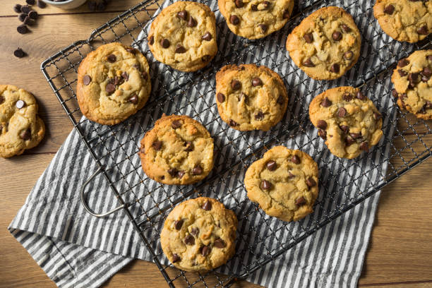

Cookie

The Only Chocolate Chip Recipe You Will Need
Ditch your old chocolate chip recipe, this is the only one you need. If you make this for friends or family you will always be asked to bring these to all future gatherings. They will definitely love you!
Preparation time is about 30 minutes, and the cookies will need to bake in the oven at 375°F for about 8-10 minutes.
Ingredients
- 1 cup softened salted butter
- 1 cup granulated sugar
- 1 cup packed light brown sugar
- 2 teaspoons pure vanilla extract
- 2 large eggs
- 3 cups all-purpose flour
- 1 teaspoon baking soda
- 1/2 teaspoon baking powder
- 1 teaspoon sea salt
- 2 cups chocolate chips
Instructions
- Preheat oven to 375 degrees fahrenheit.
- Mix together flour, baking soda, baking powder, and salt in a medium sized mixing bowl.
- In a separate bowl cream together butter and sugars until well combined.
- In a small bowl beat eggs and vanilla together for about one minute.
- Mix the dry ingredients and wet ingredients until well combined.
- Fold in the chocolate chips.
- Evenly spread out rolled cookie dough across the baking sheet.
- Bake in oven for about 8-10 minutes. Let them sit for about 2 minutes before you enjoy them.